Depth
92 Musicians, Four Jazz Ensembles
Four extracurricular jazz ensembles inside the City High music program carry 92 student musicians, each band rehearsing twice a week outside the school day.
Proudly representing Iowa City High at the 99th Annual Iowa Bandmasters Association Conference.
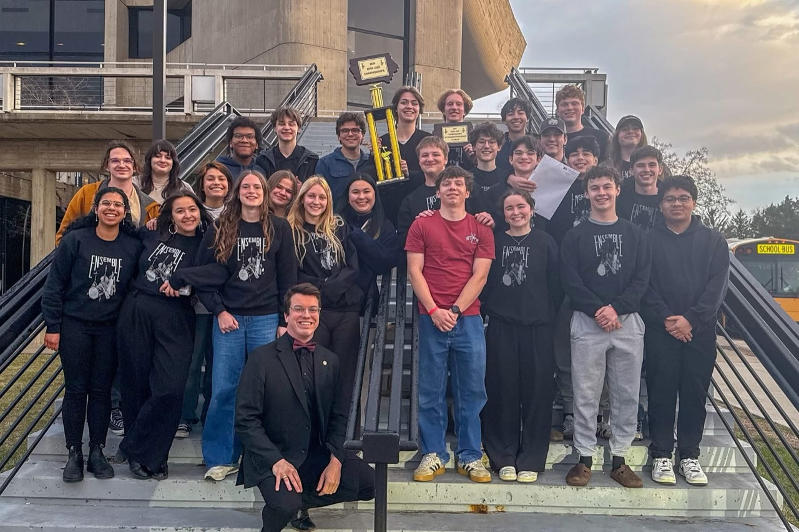
The only Iowa high school jazz band performing at this year's Iowa Bandmasters Association Conference.
Seven selections from the contemporary big band repertoire, in the order they will be performed.
Benny Carter (1907–2003), alto saxophonist, trumpeter, arranger, and bandleader, wrote and arranged across nearly eight decades, and is widely regarded as the architect of the modern saxophone section. "Movin' Uptown" comes from his late-career Echoes of San Juan Hill project and lives squarely in the Basie up-tempo flag-waver tradition; Carter stretched the usual 32-bar AABA into 64 bars so each chorus rides a full minute of swing. The transcription performed tonight was prepared by David Berger for Jazz at Lincoln Center, and has been featured at the Essentially Ellington competition. A clinic in ensemble swing and sectional precision, and the right way to open a program.
Marshall Gilkes is a two-time Grammy-nominated trombonist and composer whose long collaboration with Germany's WDR Big Band has reshaped the modern jazz orchestra. "Fresh Start" opens his 2024 album LifeSongs, written as a meditation on the idea of tabula rasa (the blank slate) in the years coming out of the pandemic. Gilkes calls it a mini-concerto: a driving, straight-eighth chart that asks a soloist to carry a long arc over the full ensemble. Listen for the way the rhythm section never quite swings and never quite rocks, but holds the piece in its own pulse, and for the harmonic depth Gilkes brings from his small-group writing into the big band format.
Sammy Nestico (1924–2021) became Count Basie's chief arranger in 1967 and shaped the Basie band's sound through the golden era that followed. Widely regarded as the dean of modern American big band writing, his charts carry pocket-deep swing, tight section voicings, and an unforced groove that an entire generation of high-school and college bands grew up learning to play. "It's Oh, So Nice" first appeared on the 1968 Basie album Basie Straight Ahead, with the piano taking the solo chair surrounded by classic Nestico devices: brass buckets, sax scoops, drum fills that land on the dot. A masterclass in section discipline.
Annie Booth (b. 1989) is a Denver-based pianist, composer, and educator on the faculty of the University of Denver's Lamont School of Music. "Jolly Beach," which her publisher calls a funky, joyful piece for big band, rides on an infectiously brushed groove and a catchy, syncopated melody that finds its way into the audience's bloodstream by the second chorus. The chart won the Jazz Education Network's 2020 Young Composer Showcase and was premiered at the conference that year by the U.S. Navy Band Commodores. Listen for the rhythm section: this is a piece where the brushwork and pocket carry as much weight as the horn voicings.
Fred Sturm (1951–2014) led the jazz studies program at Lawrence University for nearly three decades and is remembered as one of the most respected voices in the contemporary American big band canon. "Breathing" was among the last pieces he composed, originally written for solo piano during his battle with cancer, and was sensitively re-imagined for full jazz orchestra by his longtime colleague David Springfield as a concert ballad with no improvisation. The result asks every section to play in service of a single line, building a long, slow arc of harmonic motion underneath a melody passed between flugelhorns and saxophones. A moment of repose at the heart of tonight's program, and a quiet tribute to one of the great teachers of this music.
Joe Gallardo is a Texas-born trombonist, composer, and arranger, one of the elder statesmen of the modern Latin jazz movement, best known for his long collaboration with Germany's NDR Big Band. Michael Philip Mossman, the internationally recognized trumpeter and one of the leading arrangers in Latin big band writing, drew this chart from the 1950s and '60s Latin big-band tradition, where the brass and the percussion section answer each other beat for beat. Listen for the layered congas, timbales, and bell patterns underneath the horn writing, and for the way the harmonic language moves between modern jazz voicings and the classic montuno of a Latin dance band. The program turns toward its close.
Ryan Middagh is the director of jazz studies at Vanderbilt University's Blair School of Music, a DownBeat-recognized educator, and a saxophonist-composer whose original writing for the Ryan Middagh Jazz Orchestra has become a fixture of the contemporary big band scene. "Indra Kunindra," commissioned by the University of Northern Iowa, opens with a haunting solo trumpet over the trombone section, moves into a groove-based exotic passage, then drops into a relaxed, dance-like figure in 3/4. Solos emerge for guitar or piano, then alto saxophone over darker textures, before a driving climax brings the opening melody back in full brass voicing, resolute and confident. The chart is a tour through the full color palette of a modern jazz orchestra, and a fitting close to tonight's program.
Twenty-one student musicians. Tap any player for a bio.
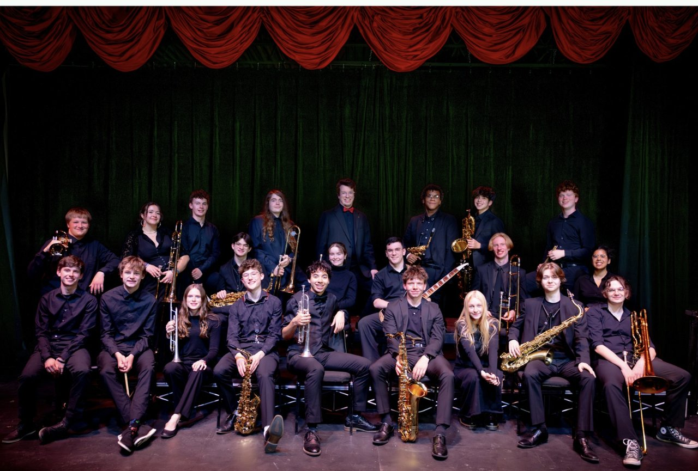
Aaron Ottmar is in his ninth year as Co-Director of Bands at City High School, his alma mater (Class of 2011). He directs the Little Hawk Marching Band and Pep Band (co-directed with Mr. Mike Kowbel), Symphony Band, Jazz Lab, Jazz Collective, and Jazz Ensemble, and teaches AP Music Theory and woodwind lessons.
Before returning to Iowa City, he served as director of bands at Davis County High School in Bloomfield, Iowa, after earning his bachelor's degree in Instrumental Music Education (Jazz Emphasis) from the University of Northern Iowa in 2015. He performs with the Cedar Rapids Municipal Band as a percussionist, with the Waterloo-Cedar Falls Symphony, and with Orchestra Iowa as a substitute pianist and percussionist, and served as director of the 2025 3A NEIBA Honor Jazz Band.
He has received the Educational Excellence Award from the Beta Rho Chapter of Upsilon State for service in the Davis County community, the ICCSD District Parent Organization Honoree Award, and the ICCSD Shine Award for excellence in education.
Mike Kowbel is in his seventh year as Co-Director of Bands at City High School, where he conducts the Wind Ensemble, Concert Band, and Jazz Workshop, and co-directs the Little Hawk Marching Band and Pep Band with Mr. Ottmar. He also teaches brass and saxophone lessons.
Under his direction, the City High Wind Ensemble was selected to perform at the 97th annual IBA Conference in 2024. Before City High he served as Director of Bands at Southeast Middle School and at Monticello High School, whose Concert Band performed at the 91st annual IBA Conference in 2018.
He holds a Bachelor of Music and a Master of Music Education with a conducting certificate from the University of Wisconsin-Stevens Point, currently serves as Commission Committee Chair for SEIBA, and has previously served as SEIBA district chair for Marching Band Affairs.
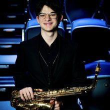
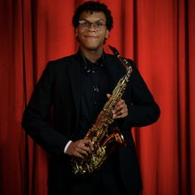
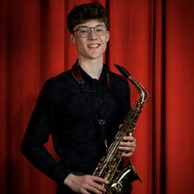
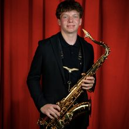
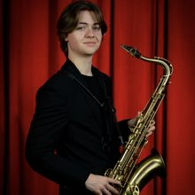
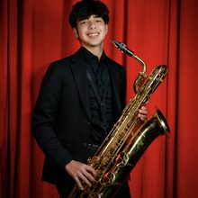
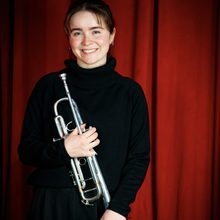
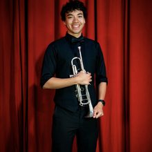
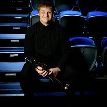
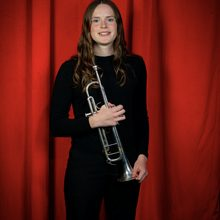
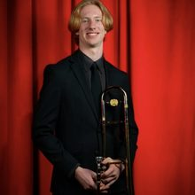
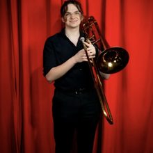
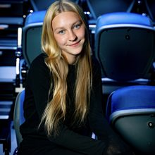
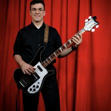
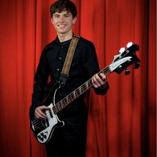
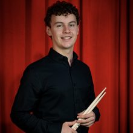
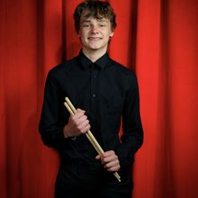
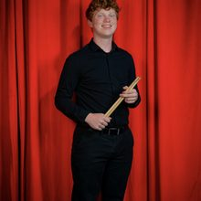
City High Jazz is comprised of 92 musicians across four extracurricular jazz ensembles, each rehearsing twice a week outside the school day. As the program's premier level, the City High Jazz Ensemble maintains an extensive performance calendar that includes jazz festivals throughout Iowa and Illinois, the KCCK Corridor Jazz Project, the Friday Night Concert Series in downtown Iowa City, and the annual City High Jazz Showcase, which has welcomed professional guest artists including Janelle Finton, Michael Dease, Sharel Cassity, Marques Carroll, and Sara Jacovino in recent years.
The ensemble has maintained a tradition of musical excellence through the decades, with 12 finishes in the top six Class 4A bands at the Iowa Jazz Championships over the last 30 years, most notably the program's first-ever first-place Class 4A finish in 2024 and a second Class 4A title in 2026.
Tonight marks the City High Jazz Ensemble's sixth performance at the Iowa Bandmasters Association Conference, following appearances in 1997, 2000, 2003, 2014, and 2019. The wider City High Band family has now sent twelve ensembles to the IBA stage when counting the Wind Ensemble's performances in 1991, 1996, 1999, 2002, 2019, and 2024.
City High Jazz is grateful to the band parents, private instructors, school administrators, and members of the Iowa City community whose support over decades has made this evening possible.
Five things to know about jazz at City High.
Four extracurricular jazz ensembles inside the City High music program carry 92 student musicians, each band rehearsing twice a week outside the school day.
Every student who completes a September audition earns a spot in a jazz band. No one is turned away from the program.
Each year, the jazz program travels to Chicago to study, listen, and play in one of the great American jazz cities.
The annual City High Jazz Showcase has recently welcomed Janelle Finton, Michael Dease, Sharel Cassity, Marques Carroll, and Sara Jacovino as guest artists alongside the students.
Tonight is the Jazz Ensemble's sixth performance at the Iowa Bandmasters Association Conference, joining appearances in 1997, 2000, 2003, 2014, and 2019.
Recently invited to perform alongside the Iowa Jazz Composers Orchestra, UNI Jazz Band One, and the University of Iowa Johnson County Landmark Ensembles.
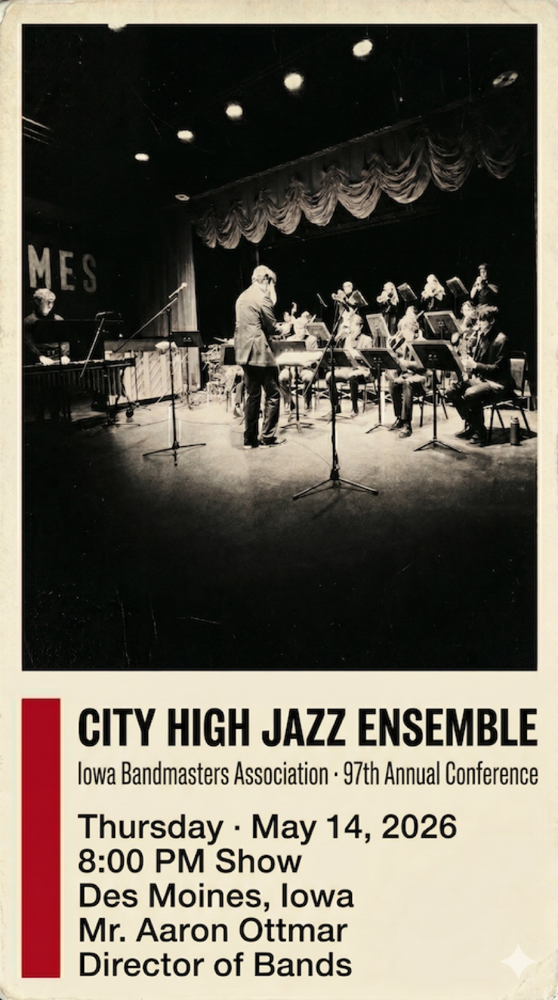
Designed for the 99th Annual Iowa Bandmasters Association Conference · May 14, 2026.